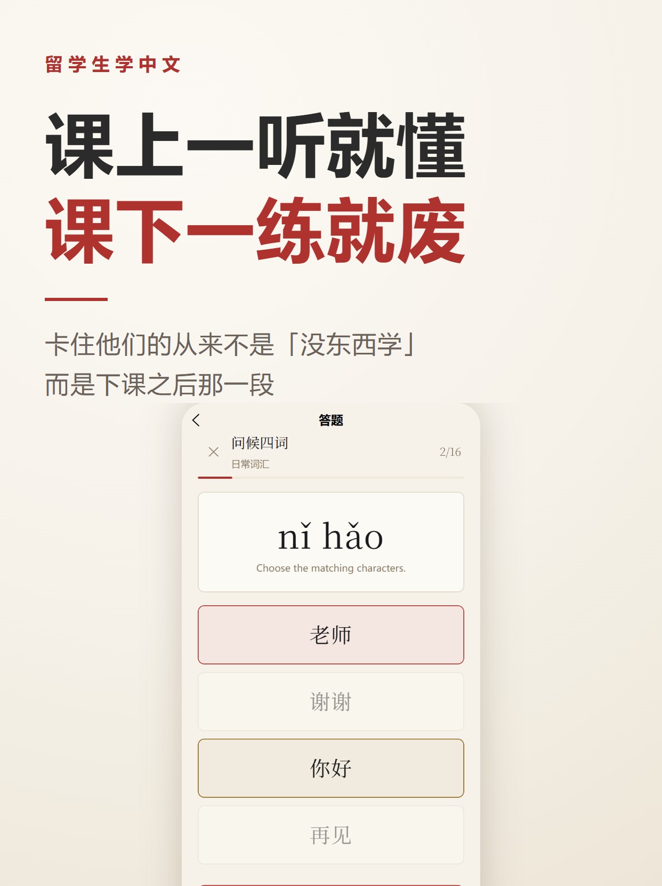

cover-01.png大字「课上一听就懂 / 课下一练就废」，下方产品答题页截图（03-question）。
篇 1
痛点洞察
打教育圈
D3 发
标题 · 三选一
- 备选 1
- 备选 2
- 备选 3
正文
含话题标签，粘贴即用
教过留学生的都懂这个场景 👇
课上讲「日」，学生点头如捣蒜。
下周再问，他愣住：老师，这个字念什么？
不是他不认真，也不是课讲得不好。
问题是——下课之后，没人管他练没练。
网课把新知识讲给你，然后就没有然后了。
学生手机里躺着好几个 App，可它们都在教新课，
没人负责把他刚学过的那些练到手上。
所以我自己做了个只干这一件事的小工具：汉语搭子。
它不教新课，只做课后那一段：
同一个「日」字，用五种问法轮着上——
认字、拼音、词义、笔顺、听音。
一天一刻钟，练完就走。
一节课的知识点，换个问法也得认识，
这才叫真的会了。
想问做对外汉语的各位：
你们的学生，课后会主动练吗？😮💨
#对外汉语 #国际中文教育 #汉硕 #教外国人学中文 #中文教学
#留学生 #汉语教学 #对外汉语教师 #中文学习